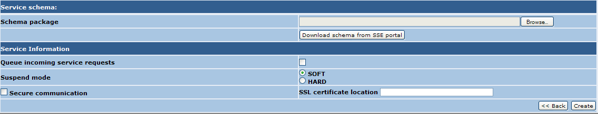

To create a new service follow these steps.
Perform the login procedure.
To create a new service follow these steps.
Perform the login procedure.
Click on the Service management link in the toolbar. The browser should display

Click on the "Create a new Service" section link. The following page should be displayed

select the "Create a new Service" option and type the Service Name in the "Service name" text field. This is the name of the service that will be used to create the WSDL file.
Click on "Next >>". The browser should display
This
allow you to choose the type of service. The value UserDefined
identifies a type of service which will be completely defined by the
user, providing the schema set, all operation details etc. while all
other combo box values identify a category of SOAP interfaces. Toolbox
8.0 ships with two categories installed: Ordering and Catalogue. The
first one contains interface definition for Ordering interfaces (e.g. HMA ordering interface) whle the second contains catalogue interfaces like OGC06-131r6.
Select one of the items and click on "Next >>". The browser should display
This page will allow you to add an abstract and a Description to the service. Once done, click on "Next". If the user choosed "User defined" as type of service the wizards redirect to here, otherwise the next step is shown below:
This
section will allow you to associate a predefined interface to the
service. A selection of interfaces, belonging to the type selected in
the previous steps, is provided. Select one of the choices and click
"Next".
The next step in service creation allows the user to specify which,
between all of the modes associated to the selected interface, should
be implemented. The same interface should be associated to the new
service in multiple ways. Some modes may provide all necessary logic
(leveraging the user from providing one) while other may demand to the
user this task. An example is the interface OGC06-131r6 which
implements a mode named Standalone and a mode called Gateway. The first
one will allow the user to create a new service, with such SOAP
interface, which implements a catalogue using the bundle ebRR and which
doesn't require to provide any logic when creating operations. The
second mode instead will ask the user the scripts for implementing the
operation internal logic.
The number of modes associated to an interface may vary from interface to interface.
When a mode has been selected, the user shall click on "Next". The following page is shown:
In the following a description of the "Service information" section
When all options have been selected click on the "Create" button.
The service is created and the user is redirected to the configuration
page which allows some refines (like upload a modified schema). See here for further information.
The following image shows the final step in case "No Interface" has been choosed.

From this form a schema set shall be provided by the user through a zip file (see here) or shall be downloaded by the SSE portal (see here).
If no schema set shall be associated to the service, none of the
previous steps shall be performed. In this case the validation is
disabled.
The "Service Information" section is the same as the one described above, so refer to the description above.